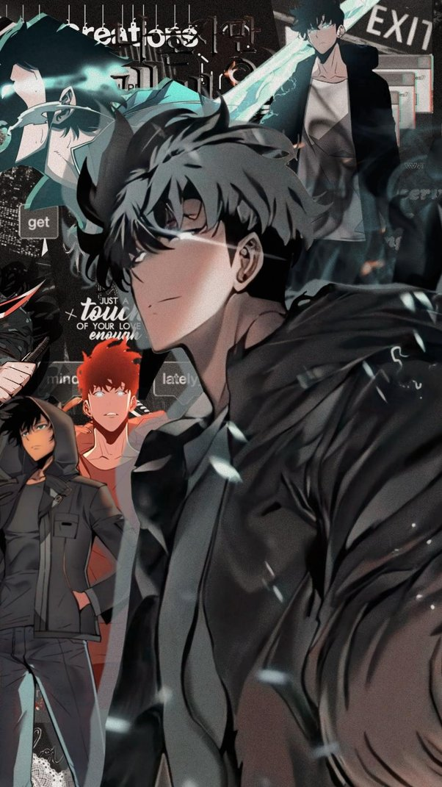

1. Solo Leveling
Solo Leveling is both a webtoon and web novel that is written by Chugong and its genre is a combination of action and fantasy. It is one of the most popular webtoons in the past couple years and has exceeded $30 million in sales globally. Moreover, it became so popular that it was recently (January of 2024) released its first animated series. This is a great opportunity as webnovels and webtoons often do not get adapted into anime, but instead kdrama series.
2. Who Made Me A Princess
Who Made Me a Princess is a popular Korean webtoon series illustrated by Spoon, based on Plutos's web novel of the same name and its genre is a combination of comedy, fantasy, isekai (reincarnation), and romance. The story follows the life of a princess named Athanasia de Alger Obelia who was a Korean girl in her past life. The story is really cute and has a lot of themes about family dynamics and learning to love and overcome resentment.
3. A Bussiness Proposal
A Business Proposal is a manhwa series written by HaeHwa and illustrated by Narak and its genre is romantic comedy. It is a more modern take on manhwa and set in South Korea’s corporate world. The popularity rose to over 450 million views worldwide. The story was also later developed into a very popular Korean drama (kdrama) directed by Park Seon-ho.